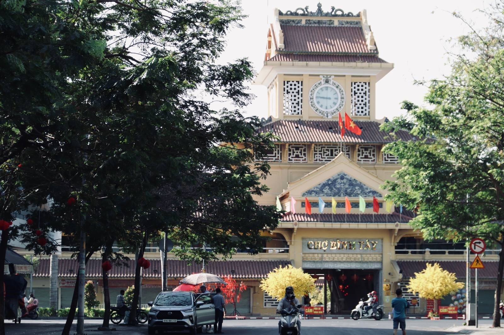
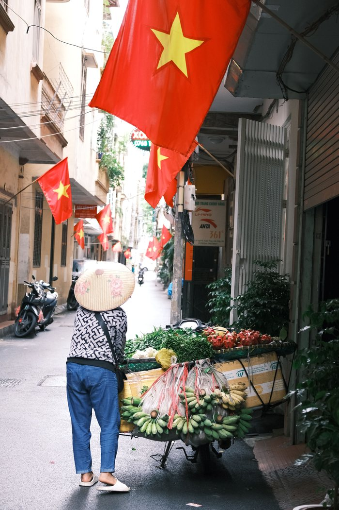
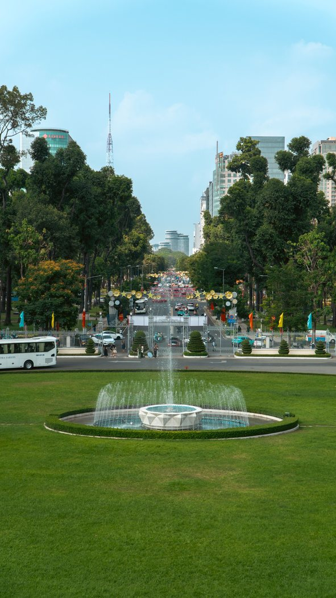

С ребёнком на байке во Вьетнаме: правила, шлем, штрафы

Во Вьетнаме семья на одном байке — обычная картина, и у приезжих складывается впечатление, что правил тут нет. Правила есть, и с 1 января 2025 года они стали заметно строже: действует Закон о порядке и безопасности дорожного движения 2024 года и постановление о штрафах № 168/2024/NĐ-CP. Ниже — что именно в них написано про детей, без домыслов.
Сколько пассажиров можно везти
Базовое правило: на мотоцикле или мопеде — один пассажир. Но статья 33 Закона 2024 года прямо предусматривает исключения, и одно из них — перевозка ребёнка младше 12 лет: в этом случае допускается до двух пассажиров. Другие исключения — сопровождение больного в медучреждение и конвоирование правонарушителя.
То есть взрослый + ребёнок до 12 лет — законная комбинация. Взрослый + двое школьников старше 12 — уже нарушение.
Шлем: с какого возраста обязателен
Шлем с застёгнутым ремешком обязателен для водителя и пассажира. Освобождены от него только дети младше 6 лет (и отдельно — больные при экстренной перевозке). Значит с 6 лет ребёнок обязан быть в шлеме так же, как взрослый.
Штраф за поездку без шлема — 400 000 – 600 000 ₫, и он выписывается за каждого человека без шлема, включая пассажира. Плюс момент, который важнее штрафа: детский шлем должен быть детским. Взрослый шлем на ребёнке болтается, при падении смещается и почти не защищает. Как выбирать по размеру и посадке — в статье как выбрать шлем во Вьетнаме.

Можно ли сажать ребёнка вперёд
Здесь чаще всего ошибаются. Водителю запрещено вести байк, обхватывая руками сидящего впереди человека, — и единственное исключение в постановлении № 168/2024 сделано для ребёнка младше 6 лет, сидящего впереди. Штраф за нарушение этого пункта тяжёлый: 8 000 000 – 10 000 000 ₫ плюс лишение права управления на 10–12 месяцев.
Практический вывод: маленького ребёнка (до 6 лет) закон допускает впереди; ребёнка от 6 лет и старше нужно везти позади водителя, в шлеме, а не между руками и рулём.
Отдельно про 50cc
Байк 50сс — это техника с ограниченной мощностью. Формально она везёт двоих, фактически с пассажиром меняется всё: разгон становится ленивым, тормозной путь длиннее, на подъёмах скорость падает. С ребёнком на борту это означает более ранний сброс скорости и больший запас дистанции. Мы разбирали физику вдвоём отдельно — можно ли ездить вдвоём на байке 50сс, и как вести 50сс в гору.
Как сажать ребёнка: короткий порядок
- Шлем надет и застёгнут до посадки, ремешок — на два пальца под подбородком.
- Ноги в закрытой обуви; никаких шлёпанцев и свободных шнурков рядом с цепью и колесом.
- Ребёнок садится после вас, когда байк уже стоит устойчиво на обеих ногах.
- Руки — за вашу куртку или ремень, ноги на подножках, а не свисают.
- Одна договорённость до старта: сидим ровно, не машем руками, не поворачиваемся назад, если что-то — говорим, а не дёргаем.
- Глушитель справа снизу — самая частая детская травма именно об него. Объясните и садите с левой стороны.

Маршрут и время
С ребёнком стоит планировать поездку иначе: короткими отрезками по 15–20 минут, по широким улицам, вне часов пик и не в дождь. Полуденное солнце для детей тяжелее, чем для взрослых, — вода и головной убор обязательны, а полдень лучше пропустить. Про жару и дождь есть отдельные материалы: езда в жару и сезон дождей в Нячанге.
Когда лучше не везти
- ребёнок засыпает в дороге — на байке это опасно, ему нужна машина или такси;
- нет детского шлема по размеру;
- дождь, темнота или незнакомый маршрут по трассе;
- вы сами сели на байк несколько дней назад и ещё не уверены в тормозах и балансе.
Такси во Вьетнаме дешёвое, и в этих случаях оно объективно правильнее. Сравнение расходов — в статье байк или Grab в Нячанге.
Короткий вывод
Закон разрешает везти ребёнка: до 12 лет он считается исключением из правила «один пассажир», с 6 лет обязателен шлем, а впереди водителя можно сажать только ребёнка младше 6 лет. Всё остальное — про запас по скорости, маршрут и исправный байк. Готовые байки 50сс с документами — в каталоге.